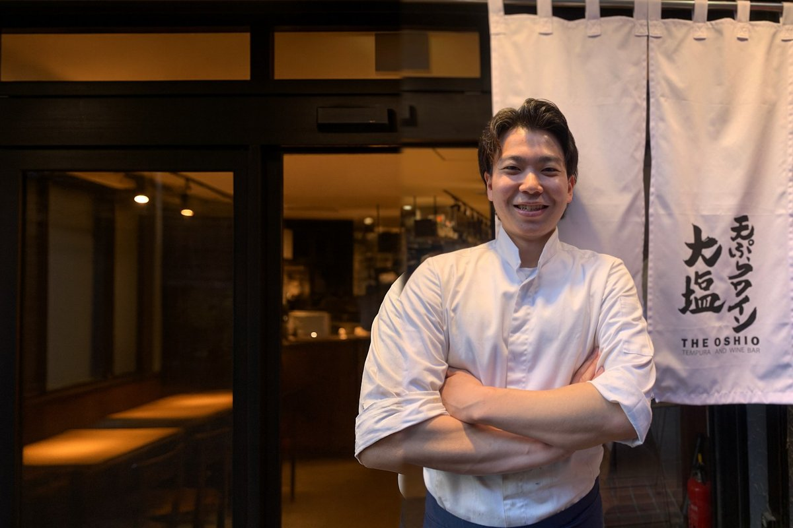
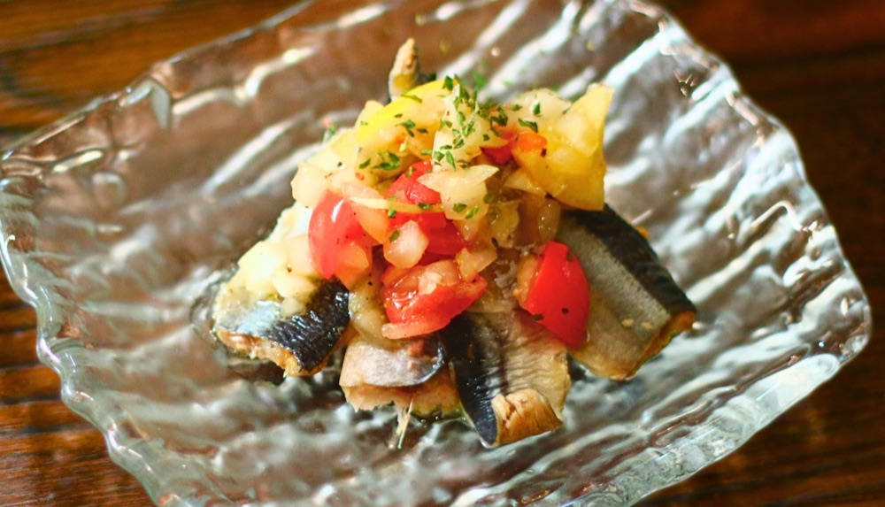
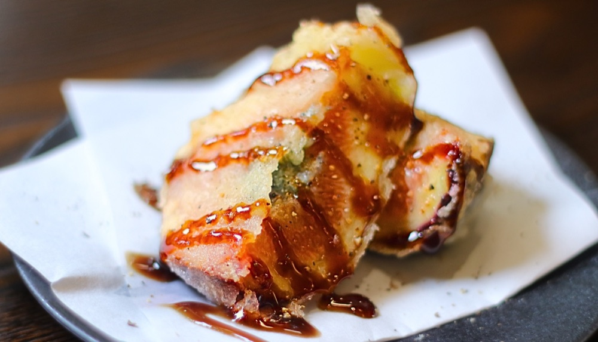
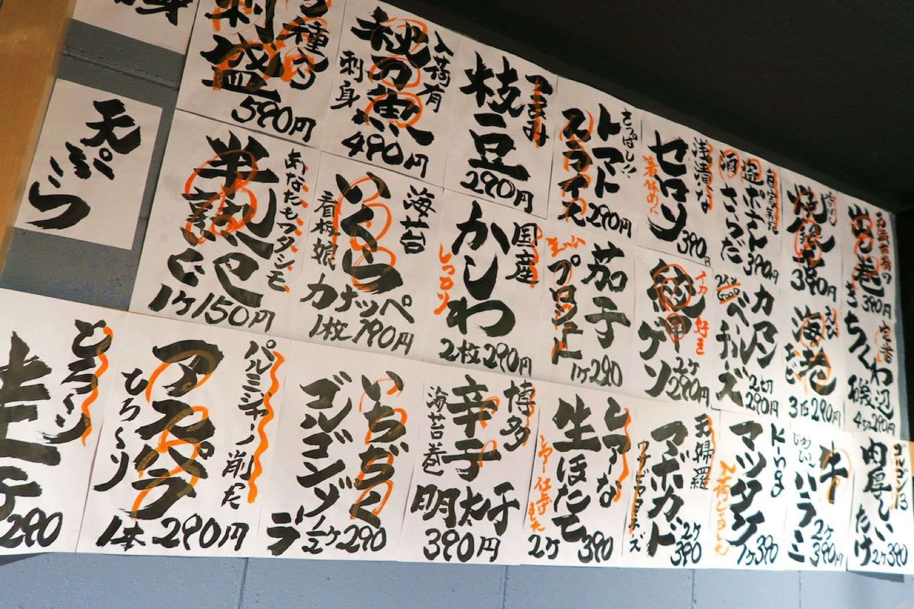

STAFF INTERVIEW
‘싸우는 요리사’는,
도쿄역 에리어에서
연매출 10억을 목표로 합니다.
히비야점 점장 겸 도쿄 에리어 매니저야마시타 케이지로

덴푸라 오시오 직원 인터뷰. 이번에는 히비야점 점장이자 도쿄 에리어 매니저를 맡고 있는 야마시타 케이지로 군을 소개합니다.
2020년, 코로나 시기에 입사했습니다. 이전에는 아디다스 판매원으로 일했고, 외식업은 처음이었습니다. 나카노점 오픈부터 점장을 거쳐, 도쿄 에리어 매니저로 성장했습니다. 지금은 플래그십인 히비야점에서 매장 이익 극대화와 후임 양성에 힘쓰고 있습니다.
인터뷰 진행은 대표 오시오입니다.
아디다스 판매원에서 외식업으로
오시오야마시타 군도 우리와 함께한 지 오래됐지.
야마시타네, 올해로 7년째입니다.
오시오전에 아디다스에서 일했었지?
야마시타맞아요.
오시오거기서 완전히 다른 외식업에 와서 이렇게 성장한 게 대단해.
야마시타뭐, 여러 가지 일이 있었으니까요.
오시오그렇지. 야마시타 군 위에 있던 분들도 많이 나가고, 이제는 타카시, 코타니, 마코짱(사카에) 다음 네 번째야.
야마시타네. 그래서 제가 회사를 이끌어야겠다고 생각합니다. 그 세 분은 원래 오시오 씨와 아는 사이잖아요. 저는 외부 출신이라, 제가 위로 올라가면 모두가 똑같이 목표를 가질 수 있다고 생각해요.
오시오역시 믿음직스럽네.

목표는 ‘싸우는 요리사’
오시오그런데 또 몸이 더 커진 것 같은데? 또 브레이킹다운에 나갈 거야? (웃음)
야마시타아뇨, 이제는 안 나가요. 그래도 ‘싸우는 요리사’라는 말이 멋지잖아요.
오시오산지(원피스) 같네. (웃음)
야마시타저는 손오공을 목표로 하고 있어요. (웃음)
오시오그 기세로 히비야와 도쿄 팀을 이끌어줘.

히비야점, 5월부터 전년 대비 실적 상승 지속
오시오올해 들어서도 히비야점의 기세가 멈추질 않네. 5월부터 계속 전년 대비 실적을 넘고 있지?
야마시타네, 모두가 꾸준히 힘내주고 있습니다.
히비야점 2026년 월별 매출(세금 별도)입니다.
| 월 | 2026년 | 2025년 | 전년 대비 |
|---|---|---|---|
| 1월 | ¥14,200,000 | ¥13,780,000 | +3.0% |
| 2월 | ¥13,480,000 | ¥13,770,000 | −2.1% |
| 3월 | ¥15,260,000 | ¥15,580,000 | −2.1% |
| 4월 | ¥14,750,000 | ¥15,610,000 | −5.5% |
| 5월 | ¥16,740,000 | ¥15,890,000 | +5.3% |
| 6월 | ¥14,850,000 | ¥14,560,000 | +2.0% |
| 7월 | ¥15,210,000 | ¥14,290,000 | +6.4% |
| 8월 | ¥15,500,000 | ¥13,420,000 | +15.5% |
| 9월 | ¥14,350,000 | ¥13,470,000 | +6.5% |
| 1~9월 | ¥134,340,000 | ¥130,370,000 | +3.0% |
5월부터 9월까지 5개월 연속으로 전년을 웃돌았으며, 이 5개월 합계는 전년 대비 +7.0%입니다. 8월은 +15.5%였습니다.

아르바이트에게 '책임과 재량'을 함께 맡깁니다
오시오인원도 많고, 힘들지 않나요?
야마시타네, 개성이 넘치는 친구들이 많아서 쉽지는 않습니다.
오시오다른 매장에도 공유할 수 있는, 잘 되는 비결 같은 게 있을까요?
야마시타PDCA를 직원뿐 아니라 아르바이트도 함께 실천하고 있습니다. 접객 책임자는 아르바이트 리더가 맡고, 아르바이트에게는 책임과 재량을 함께 부여합니다.
"스스로 일하기 편하도록 오퍼레이션을 자유롭게 바꿔도 된다"고 전하고, 프런트와 접객은 완전히 맡깁니다. 직원은 요리에 집중합니다. 이렇게 하면 요리와 접객이 함께 잘 돌아갑니다. 저는 그 두 부분이 원활하게 돌아가도록 조율하는 역할을 하고 있습니다.
오시오예전부터 모두의 사이를 잘 이어주는 데 능숙했죠.
야마시타네, 지금도 여러 매장의 고민이 제게 모여서 바쁩니다. (웃음)
오시오그렇군요, 그 얘기는 못 들은 걸로 할게요. (웃음)

다음 목표는 '사장에 한 번 도전해보고 싶다'입니다
오시오도쿄 팀도 야마시타 군도, 점점 잘 성장하고 있어요. 다음 목표가 있나요?
야마시타그렇네요…… 한 번 독립해볼까 생각했는데, 붙잡혀서요（笑）
오시오그 이야기는 일단 접어두고요（笑）
야마시타지금은 진심으로 이 도쿄 팀을 더 크게 키우고 싶어요. 회사 전체적으로도 분사화가 진행되는 것 같으니, 한 번 사장 역할도 해보고 싶습니다.
오시오야마시타 군이라면 할 수 있어요. 부탁할게요!
야마시타아직 실감은 잘 안 나지만, 도쿄역 에리어만으로 연매출 10억 정도를 달성해보고 싶어요.
오시오좋아, 한 번 해보자!
야마시타손오공 아니에요?（笑）
아디다스 판매원에서 코로나 시기 외식업계로. 나카노점 오픈, 점장, 에리어 매니저를 거쳐 지금은 히비야점과 도쿄 팀을 이끌고 있습니다. “외부에서 온 제가 성장하면, 모두도 더 높은 곳을 바라볼 수 있다.” 그 말처럼, 야마시타 군의 모습을 보고 다음 리더가 자라나고 있습니다.
덴푸라 & 와인 오시오에서는 함께 일할 동료를 모집하고 있습니다.